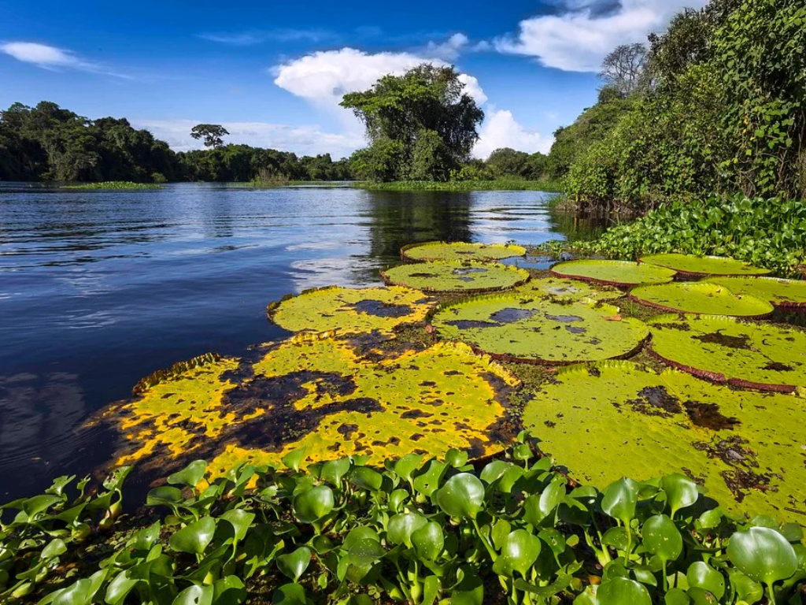

Rondônia é um estado da região Norte do Brasil, marcado pela presença da Floresta Amazônica e pela diversidade cultural de seu povo. Sua capital é Porto Velho, importante centro econômico e histórico da região. O estado possui forte atividade agropecuária, além da produção de energia elétrica e da exploração de recursos naturais. Rondônia também se destaca por suas paisagens naturais, rios e áreas de preservação ambiental, que atraem visitantes interessados em ecoturismo e aventuras na natureza. A cultura local reúne influências indígenas, nordestinas e amazônicas, presentes na culinária, nas festas populares e nas tradições regionais.
